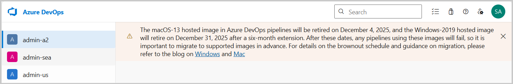
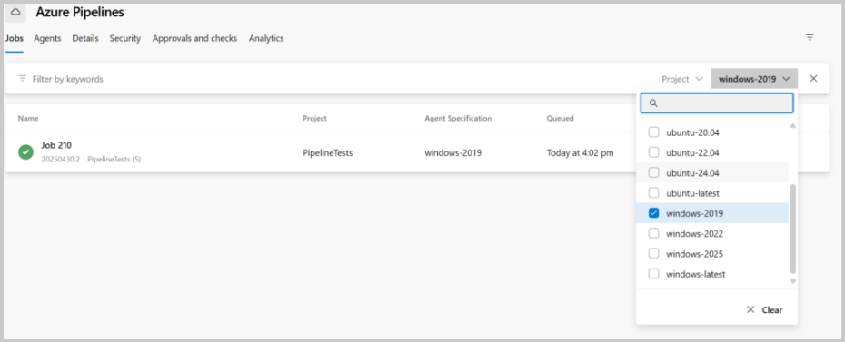
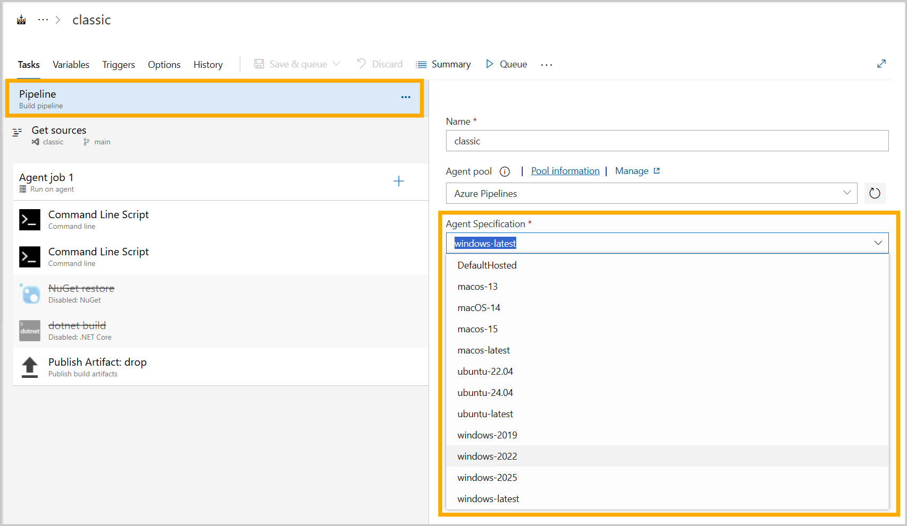
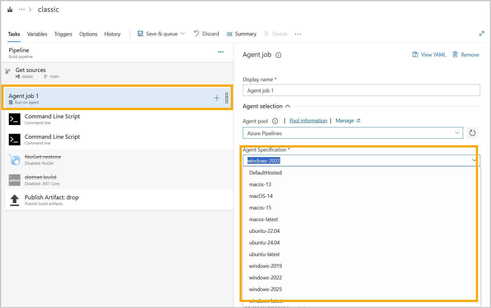

こんにちは、Japan Developer Support Core チームです🐈
Microsoft-hosted エージェントは、 Microsoft がホストするエージェントマシンを使用してジョブを簡単に実行できます。メンテナンスやアップグレードは Microsoft が行うため、ユーザーはインフラストラクチャの管理を気にすることなく、開発に集中できるので便利ですね。
本記事では、Microsoft-hosted エージェントで指定するエージェントイメージの更新についての情報をまとめました。
イメージのライフサイクル
Microsoft-hosted エージェントでは、OS のベンダーによるサポート期間や新しいバージョンのリリースに合わせて、利用可能なイメージが更新されます。 一般的に、各 OS のサポート期間は以下のようになっています。
- Windows: 最新の Windows Server バージョンとその直前のバージョンが主にサポートされます。
- macOS: 最新のメジャーバージョンとその 1 つ前のバージョンがサポートされます。
- Linux (Ubuntu): Ubuntu の LTS (Long Term Support) バージョンがサポートされます。
Microsoft-hosted エージェントで指定可能なエージェントイメージについては、概ね上記の通りのライフサイクルを保有しており、新しい OS バージョンの登場を契機にエージェントイメージを作成し、サポート対象外となる OS バージョンではイメージが「非推奨」→「廃止」となるようになっています。
イメージの管理自体は GitHub - actions/runner-images: GitHub Actions runner images で行われており、 Azure Pipelines の他にも、 GitHub Actions でも同様のイメージが利用されます。
イメージの更新がやってきたら
Azure Pipelines ではイメージが廃止予定となったタイミングから様々な形で周知を行っております。具体的な周知箇所としては、以下のようなものがあります。
- Azure DevOps ポータル画面
画面上部のバナーメッセージに表示されます。この周知箇所が最も目につきやすい部分になります。

- Azure DevOps Roadmap
Azure DevOps の製品ロードマップの更新内容に記載がされます。具体的な更新内容としては、以下のようなものがございます。
Windows Server 2019 ホストイメージの非推奨スケジュール - リリースノート
- Azure DevOps 開発者チーム ブログ
Azure DevOps 開発者チームがより詳しい情報を記載するブログ記事を公開することがございます。
Upcoming Updates for Azure Pipelines Agents Images - Azure DevOps Blog
イメージの更新によって影響を受けるパイプラインを見つける方法
非推奨となるイメージを使用しているパイプラインを特定するには、以下の方法があります。
Azure DevOps の設定画面から確認する
組織の設定 (Organization Settings) > Agent queues > Azure Pipelines プールを選択し、イメージ名でフィルタリングすることで確認できます。
URL:
https://dev.azure.com/{organization}/{project}/_settings/agentqueuesスクリプトを使用する
Microsoft が GitHub に公開しているスクリプト GitHub - FindPipelinesUsingRetiredImages を実行することで、影響を受けるパイプラインを特定できます。利用方法については GitHub の README.md を参照ください。
イメージの更新方法
パイプラインの定義で使用しているイメージのバージョンを変更します。
YAML パイプラインの場合
pool セクションの vmImage プロパティを新しいイメージ名に変更します。具体的な例として、以下は Windows Server 2025 を利用する記述方法となります。
1 | pool: |
補足情報として、それぞれの OS イメージにて *-latest という、常に適切な最新版を利用するための方法もございます。こちらを利用する場合にはイメージ廃止の影響を受けませんので、イメージの廃止に伴う更新を運用いただく必要がございません。
※ただし、 latest をご利用の場合には OS バージョンのアップグレードタイミングを Microsoft に委ねるということになりますので、OS バージョンが意図しないタイミングでアップグレードされてしまう影響がありますので、ご留意ください。
1 | pool: |
クラシック ビルドパイプライン / リリースパイプライン (GUI) の場合
パイプラインの編集画面で Tasks > Pipeline または、ジョブを選択して、「Agent Specification」のドロップダウンから新しいイメージを選択します。
 
よくある質問
Q. 廃止されたイメージを利用するとどうなりますか？
A. パイプラインのジョブ実行に失敗します。失敗時には "No image label found to route agent pool Azure Pipelines." などといった、イメージが見つからないことを示すエラーメッセージなどが表示されます。
Q. Azure DevOps ポータル画面に廃止予定のバナーメッセージが表示された場合には、そのイメージを利用していることになりますか？
A. 必ずしも廃止予定のイメージ利用しているとは限りませんので、影響を受けるパイプラインを見つける方法にてご確認ください。もし影響を受けるパイプラインが見つからなかった場合には、イメージの更新は不要です。
Q. Self-hosted エージェントを利用している場合、イメージの廃止の影響を受けますか？
A. Self-hosted エージェントをご利用のお客様は影響を受けません。イメージの廃止は Microsoft-hosted エージェントまたは Managed DevOps Pools エージェントにて廃止対象のイメージをご利用の場合のみ影響を受けます。
本ブログの内容は弊社の公式見解として保証されるものではなく、開発・運用時の参考情報としてご活用いただくことを目的としています。もし公式な見解が必要な場合は、弊社ドキュメント (https://learn.microsoft.com や https://support.microsoft.com) をご参照いただくか、もしくは私共サポートまでお問い合わせください。